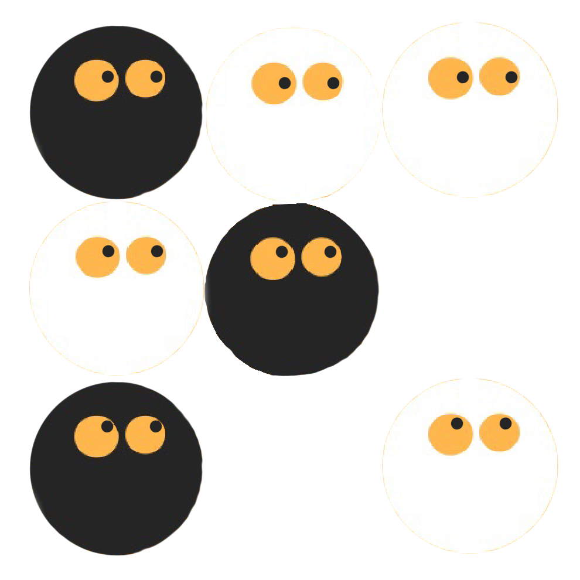
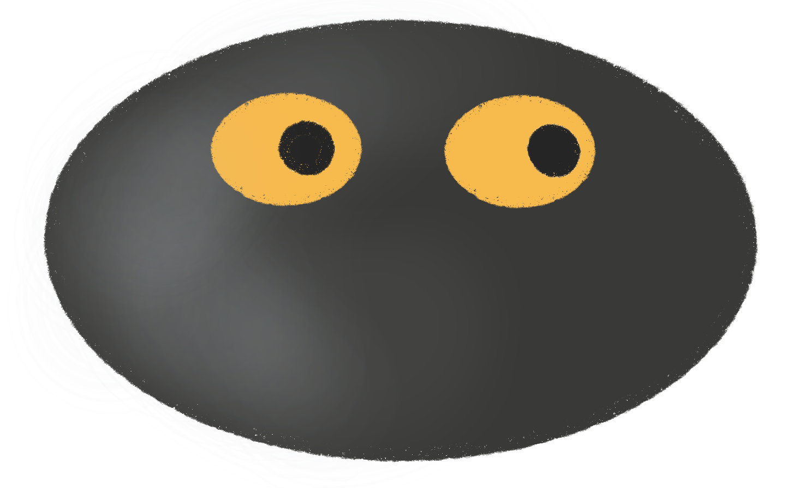
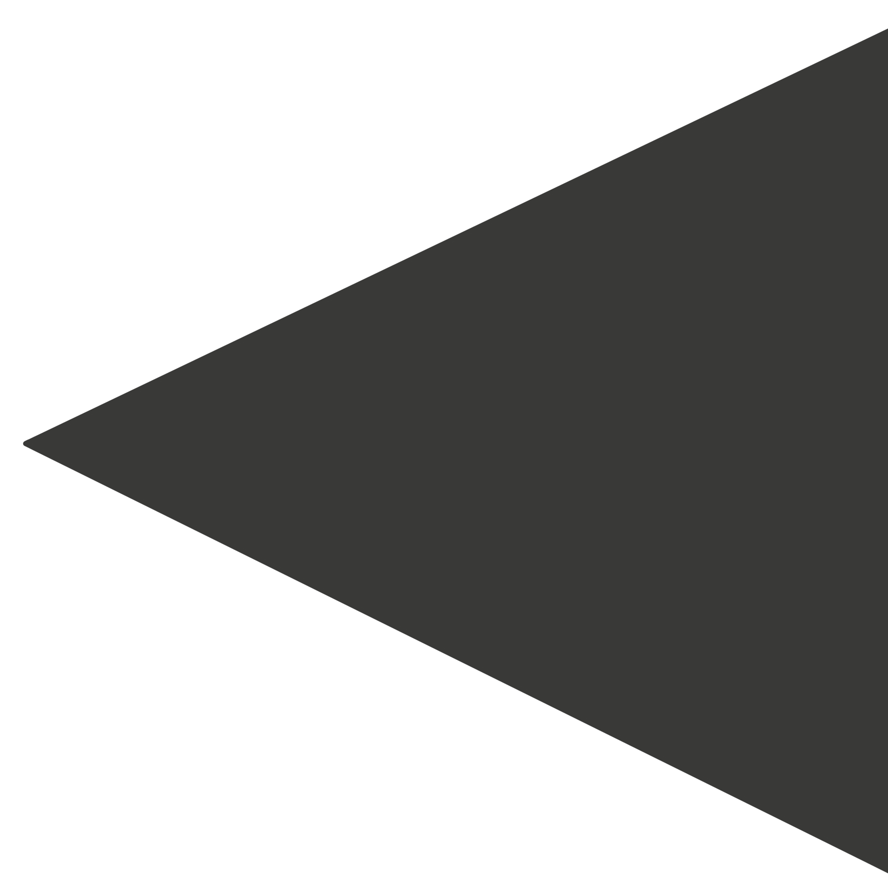

Basics
Equipments


We are stones. We are enemies against each other on our battleground. The black army in Go usually contains 181 stones and the white army contains 180 white ones; a 19×19 grid has 361 points, so there are enough stones to cover the board, and Black gets the extra odd stone because that the black side goes first. However, it may happen, that many back-and-forth captures empty the army before the end of the game: in that case, an exchange of prisoners allows the game to continue.
Here is our battleground.
It is called the board.
Hover to check out the position names on the board.

This is called
Star point.
Origin of Heaven.
Five by Five.
Three by Three.
Small Point.
High Point.
Large High Point.
Outside Point.
Outside the Large Point.
Star point.
Rules
A game of Go starts with an empty board.Each player has an effectively unlimited stones, one taking the black stones, the other taking white.
The main object of the game is to use your stones to form territories by surrounding vacant areas of the board. It is also possible to capture your opponent's stones by completely surrounding them.

Players take turns, placing one of their stones on a vacant point at each turn, with Black playing first. Note that stones are placed on the intersections of the lines rather than in the squares and once played stones are not moved.
If the stones are being captured, they are removed from the board, and kept by the capturing player as prisoners.
strategy
Keeping one's own stones connected means that fewer groups need to make living shape, and one has fewer groups to defend.
Keeping opposing stones disconnected means that the opponent needs to defend and make living shape for more groups.
The simplest way to stay alive is to establish a foothold in the corner or along one of the sides. At a minimum, a group must have two eyes (separate open points) to be alive.[68] An opponent cannot fill in either eye, as any such move is suicidal and prohibited in the rules.
A group that lacks living shape is eventually removed from the board as captured.
Set up a new living group inside an area where the opponent has greater influence, means one reduces the opponent's score in proportion to the area one occupies.
Placing a stone far enough into the opponent's area of influence to reduce the amount of territory they eventually get, but not so far in that it can be cut off from friendly stones outside.
A play that forces one's opponent to respond (gote). A player who can regularly play sente has the initiative and can control the flow of the game.
Allowing a group to die in order to carry out a play, or plan, in a more important area.